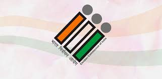
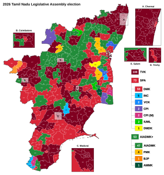
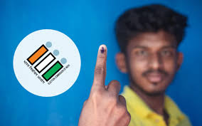

Tamil Nadu Election Result-2026

Elections to appoint the 234 members of the 17th Tamil Nadu Legislative Assembly, the highest body of the Government of Tamil Nadu, were held on 23 April 2026. The results were declared on 4 May 2026 by the Election Commission of India. It recorded the highest voter turnout in the state's history (85.1 %). The new party Tamilaga Vettri Kazhagam (TVK), founded by Tamil actor Vijay, emerged as the single largest party in its first-ever election and ended a 59-year streak of dominance of Dravidian parties in the state.The TVK contested alone in 233 constituencies.
It positioned itself as a rival to the oscillating duopoly of the Dravida Munnetra Kazhagam (DMK) and the All India Anna Dravida Munnetra Kazhagam (AIADMK), and an ideological opponent of the Bharatiya Janata Party, the ruling party of the Government of India. The incumbent DMK led the Secular Progressive Alliance (SPA), which was part of the Indian National Developmental Inclusive Alliance led by the Lok Sabha opposition, the Indian National Congress (INC); the SPA swept all the 39 seats in the state in the 2024 Lok Sabha election. The opposition AIADMK was part of the BJP's National Democratic Alliance (NDA). Opinion poll agencies projected a second consecutive term for the DMK or a return to power for the AIADMK
In an upset result, the TVK surpassed the tallies of the DMK and AIADMK alliances, amassing 108 seats but short of majority (118). The SPA was reduced to 73 seats, with the DMK securing 59 and the INC five. The NDA won 53 seats, with the AIADMK securing 47 and the BJP only one. This created Tamil Nadu's first hung assembly. The AIADMK lost its official opposition status to the DMK. This election marked the first time a non-Dravidian party emerged as the largest party in the assembly since the 1960s, breaking a tradition of power alternating between the DMK and the AIADMK.[b] The outgoing Chief Minister of Tamil Nadu, M. K. Stalin of the DMK, lost his election from the Kolathur constituency where he had previously won thrice consecutively.[c] The TVK's chief-ministerial candidate Vijay won both the Perambur and Tiruchirappalli East constituencies he contested in.
The AIADMK's former Chief Minister, Edappadi K. Palaniswami, retained Edappadi with the widest winning margin in the state.[e] On 5 May 2026, Stalin resigned as Chief Minister. The next few days, Vijay met the Governor of Tamil Nadu, Rajendra Arlekar, mutiple times to stake claim to the formation of the new government, resulting in tensions and uncertainty. Vijay pursued a majority by inviting SPA parties other than DMK to render their support; INC left the SPA and joined the TVK government, while four other SPA parties extended their support to a TVK-led coalition government without leaving the alliance.[f] Upon confirming a majority to Arlekar, Vijay was sworn in as Chief Minister on 10 May 2026.
Elections to state legislative assemblies in India are usually held once in five years, and the members of the legislative assembly are directly elected to serve five year terms from single-member constituencies. The previous assembly elections were held in April 2021 to elect the 234 members of the 16th Tamil Nadu Assembly, and the tenure of the assembly ends on 10 May 2026.[5] In the previous election, the Dravida Munnetra Kazhagam (DMK)-led Secular Progressive Alliance (SPA) formed the state government after winning 159 of the 234 seats, and M. K. Stalin sworn in as the chief minister.[6][7] The All India Anna Dravida Munnetra Kazhagam (AIADMK), which won 66 seats, became the principal opposition party and its leader Edappadi K. Palaniswami was elected and served as the leader of the opposition.
In June 2022, three members–O. Panneerselvam, P. H. Manoj Pandian, and R. Vaithilingam were expelled from the AIADMK.[9] In August 2022, P. Ayyappan of the AIADMK also joined the expelled faction.[10] K. A. Sengottaiyan was expelled from AIADMK in October 2025,[11] and subsequently resigned from his position as a member of the assembly in November 2025.[12] Manoj Pandian resigned as a member of the assembly in November 2025 and joined the DMK,[13] with Vaithilingam following suit in January 2026.[14] In late 2025, the Pattali Makkal Katchi (PMK) split into two factions, with three members expressing support to Anbumani Ramadoss and two members supporting S. Ramadoss.[15][16] After Anbumani was recognised as the official leader of the PMK, Ramadoss formed a splinter faction of the PMK.[17] Two members–T. K. Amulkandasami (AIADMK) and K. Ponnusamy (DMK) died on 21 June 2025 and 23 October 2025 respectively.[18][19] On 27 February 2026, Pannerselvam and Ayyappan resigned from the assembly and joined the DMK